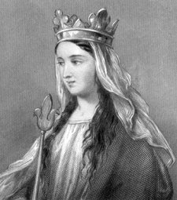
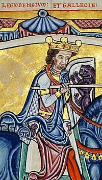
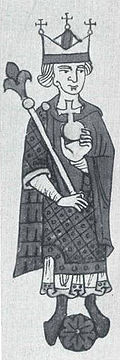
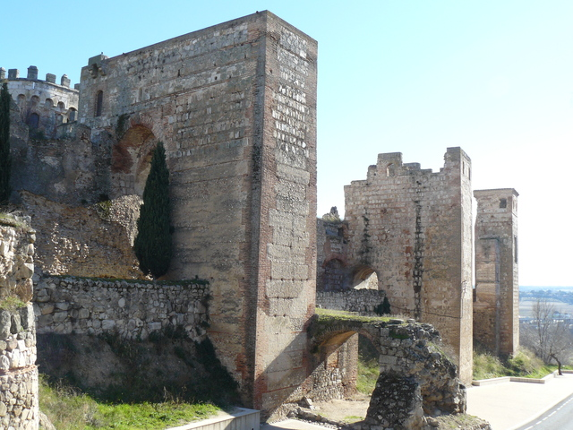
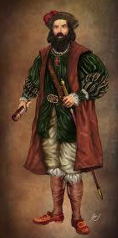
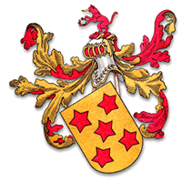
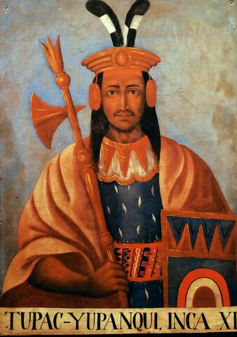
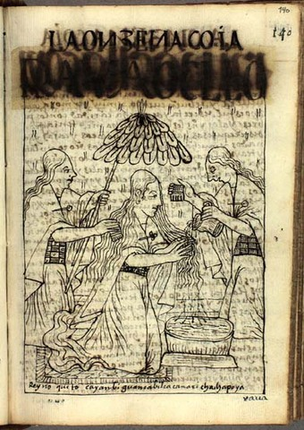
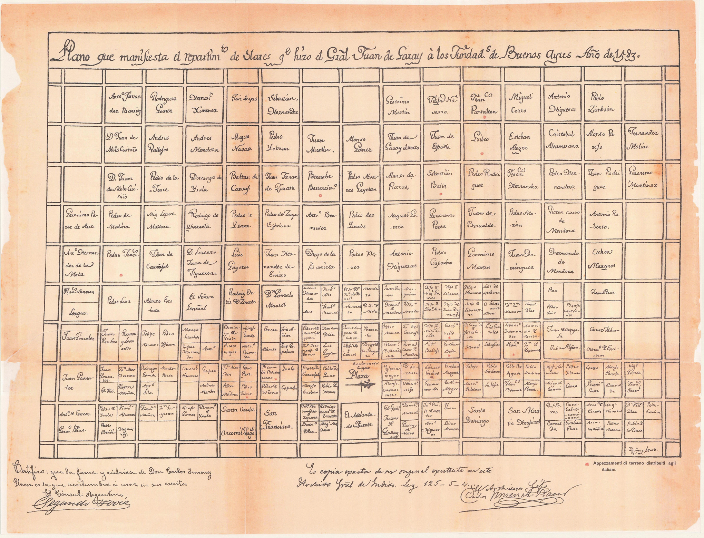

Rollo (Rolão / Göngu-Hrólfr)
& Poppa de Bayeux
Jarl viking norueguês. Em 911, através do Tratado de Saint-Clair-sur-Epte com o rei Carlos III da França, fundou o Ducado da Normandia e tornou-se o 1º governante normando de Ruão.

Guilherme I Espada-Longa (Longue-Épée)
& Sprota de Bretanha
2º governante da Normandia. Consolidou as fronteiras normandas, expandindo o território até o Cotentin e as Ilhas do Canal.
Richard I, Sem Medo (Sans-Peur)
& Gunnora de Crépon (c. 950 – 1031)
Primeiro a adotar formalmente o título de Duque da Normandia. Reinou por mais de cinquenta anos, estabelecendo as bases do feudalismo e do poder dinástico normando.
Richard II, o Bom (Le Bon)
& Judith da Bretanha (982 – 1017)
4º Duque da Normandia. Grande patrono das abadias beneditinas e articulador dinástico internacional; sua irmã Emma foi Rainha da Inglaterra.
Robert I, o Magnífico (Le Magnifique)
& Herleva de Falaise (c. 1003 – c. 1050)
6º Duque da Normandia. Protetor dos príncipes saxões exilados e peregrino da Terra Santa. Pai de Guilherme, o Conquistador.
Guilherme I, o Conquistador
& Matilde de Flandres (1031 – 1083)
1º Rei Normando da Inglaterra (1066) e Duque da Normandia. Conquistou a Inglaterra na histórica Batalha de Hastings.

Henrique I de Inglaterra (Beauclerc)
& Matilda da Escócia (1080 – 1118)
Filho de Guilherme o Conquistador. Matilda da Escócia traz a linhagem dos reis anglo-saxões de Wessex e reis da Escócia (Santa Margarida e Kenneth MacAlpin).


Imperatriz Matilda (Maud)
& Geoffroy V Plantagenet (1113 – 1151)
Imperatriz consorte do Sacro Império e Senhora dos Ingleses. Geoffroy V, Conde de Anjou, é o patriarca e fundador nominal da Casa Plantageneta.


Henrique II Plantagenet
& Leonor da Aquitânia (1122 – 1204)
Rei da Inglaterra e Duque da Normandia e Aquitânia. Leonor foi Duquesa da Aquitânia, Rainha de França e de Inglaterra.


Leonor de Inglaterra (Plantageneta)
& Rei Alfonso VIII de Castela (1155 – 1214)
Rainha consorte de Castela. Alfonso VIII foi o célebre vencedor da histórica Batalha de Las Navas de Tolosa (1212).


Rainha Berenguela de Castela
& Rei Alfonso IX de Leão (1171 – 1230)
Rainha reinante de Castela e Rainha consorte de Leão. Artífice da unificação política permanente dos dois reinos ibéricos.


São Fernando III de Castela e Leão
& Beatriz da Suábia (1205 – 1235)
Rei Santo de Castela. Beatriz da Suábia pertencia à Dinastia imperial Hohenstaufen, filha de Filipe da Suábia e neta do Imperador Bizantino Isaac II Angelos.




Infante Don Manuel de Castela
& Beatriz de Saboia (1250 – 1292)
Filho de São Fernando III. Fundador da Casa Manuel e Senhor de Villena, Escalona e Peñafiel. Beatriz é filha de Amadeu IV, Conde de Saboia.


Príncipe de Villena D. Juan de Castilla
& Inês de Castañeda
Príncipe de Villena, Duque de Peñafiel, grande estadista e autor da obra-prima literária 'El Conde Lucanor'.


Conde de Seia D. Henrique Manuel de Vilhena
& Beatriz de Sousa (1350 – Deceduta)
1º Conde de Seia e Sintra, Senhor de Montealegre e Meneses. Filho de Don Juan Manuel acolhido em Portugal; faleceu em Guadalajara a 8 de novembro de 1414.


Branca Manoel de Vilhena
& 2º senhor de Basto Fernão Vasques da Cunha (1380 – Deceduto)
Fidalga da Casa Manuel de Vilhena unida a uma das mais antigas linhagens senhoriais do norte português.


3ª senhora de Basto Maria da Cunha
& Senhor do Couto de Leomil Fernão Coutinho (1390 – 1497)
Aliança entre as casas da Cunha e Coutinho, Senhores de Leomil e Ferreira de Aves.


Vasco Fernandes Coutinho
& Maria de Lima (1440 – Deceduta)
Fidalgo da Casa de Celorico de Basto e Marialva. Maria de Lima é filha de Leonel de Lima, 1º Visconde de Vila Nova de Cerveira.


Branca Coutinho
& Jorge de Melo, o Lagio (1460 – 1534)
União fundamental que gerou o Donatário do Brasil. Pais de Vasco Fernandes de Melo Coutinho.


1º Donatário de Espírito Santo Vasco Fernandes Coutinho
& Ana Vaz Almada (1504 – 1582)
1º Capitão-Donatário da Capitania do Espírito Santo (Brasil). Fundador de Vila Velha e Vitória. Fidalgo da Casa Real e herói militar na Índia.


2º Donatário Vasco Fernandes Coutinho, "o Filho"
& Joana de Carvalho
2º Capitão-Donatário do Espírito Santo, filho do 1º Donatário Vasco Fernandes Coutinho e Ana Vaz de Almada. Pais do povoador e magistrado João de Melo Coutinho e Carvalho.
João de Melo Coutinho e Carvalho (1571 – 1601)
& Juana Holguín de Ulloa (1561 – 1628)
Nascido no Espírito Santo; Regedor e Alcalde de Buenos Aires. Juana é filha do conquistador Martín de Almendras e Constanza de Orellana Holguín, e neta materna do Maestre de Campo Pedro Álvarez Holguín e da nobre inca Beatriz Túpac Yupanqui.



Francisco de Melo Coutiño y Holguín (1593 – 1674)
& Juana Gómez de Saravia (1594 – 1693)
Patriciado inicial de Buenos Aires; redigiu testamento a 18/11/1673 e faleceu a 18/11/1674. Juana Gómez de Saravia é bisneta do fundador Juan de Garay.

Simón de Melo Coutinho y Gómez de Saravia (1627 – 1694)
& Juana de Rivera y Linares de Melo Coutinho (1644 – 1730)
Alcalde do Cabildo e fidalgo de Buenos Aires, membro de destaque da elite capitular colonial.
Leonor de Melo-Coutinho y Rivera (1666 – 1755)
& Salvador Carrasco y Fernández de los Cobos (c. 1655 – 1723)
Nascida em Buenos Aires a 6 de janeiro de 1666 e casada em 1681 na Basílica da Merced com o capitão Salvador Carrasco (natural de Málaga). Matriarca de ilustre descendência rioplatense.
María Leonor Carrasco y Melo Coutinho (1690 – 1763)
& Manuel de Escobar y Bazán (1681 – 1778)
Filha de Salvador Carrasco e Leonor de Melo Coutinho. Manuel de Escobar é filho de Juan de Escobar y Hurtado de Mendoza (1622) e Juana de Bazán y Ávalos (1644).
Margarita Jacinta de Escobar Carrasco (1715 – Deceduta)
& Cap. Juan Agustín de Cueli y Lozano (1714 – 1758)
Aliança entre as casas de Escobar Carrasco e Cueli em Buenos Aires colonial.
Juana Petrona Cueli Escobar (1743 – Deceduta)
& Jacobo (o Jacinto) Felipe José Eustaquio Gómez de la Blanca (1725 – 1776)
Casados em 1759 em Buenos Aires. Pais também do Dr. José Valentín Gómez Cueli, Reitor da UBA e congressista de Tucumán.
Josefa Florentina Gómez Cueli (1760 – Deceduta)
& Cap. Miguel González de Noriega (1748 – Deceduto)
Miguel González de Noriega, asturiano de Pendueles, foi Regedor do Cabildo de Buenos Aires em 1787 e 1791.
María Ramona González de Noriega Gómez Cueli (1781 – Deceduta)
& Juan Fernández Molina Obregón (1773 – 1841)
Transição para o período de emancipação e organização nacional argentina.

Miguel Jerónimo Molina González de Noriega
& Ana Regueira Díaz (1812 – Deceduta)
Patriciado portenho do século XIX.
Manuel Onésimo Molina Regueira
& Amélie Delaplace Sosa
Diplomata e membro da comitiva oficial do presidente Bartolomé Mitre na missão ao Brasil em 1872.

Ernestina Rita Molina Delaplace
& Adolfo Herrán Blanco
Nascida em Arrecifes em 1884; casados em Buenos Aires a 7 de novembro de 1907.
Carlos Manuel Herrán Molina (1910 – 1982)
& Clemencia Marta Encina López Lecube (1911 – Deceduta)
Carlos Manuel nasceu em Buenos Aires em 1910 e faleceu em 1982; Clemencia Marta Encina López Lecube nasceu em Buenos Aires em 1911. Pais de Odilia Marta Herrán.
Odilia Marta Herrán (1940 – presente)
& Jorge Adolfo Grimaux (1939 – 1972)
Odilia Marta nasceu em Buenos Aires em 1940; Jorge Adolfo Grimaux nasceu em 1939 e faleceu em 1972. Pais da artista visual Inés Grimaux.
Inés Grimaux
& Sir John John Ebner
Artista visual contemporânea (n. 1968), ponto de confluência genealógica e mãe das três herdeiras da linhagem.